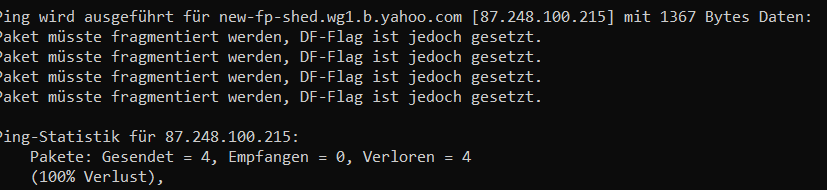
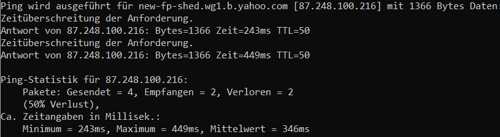
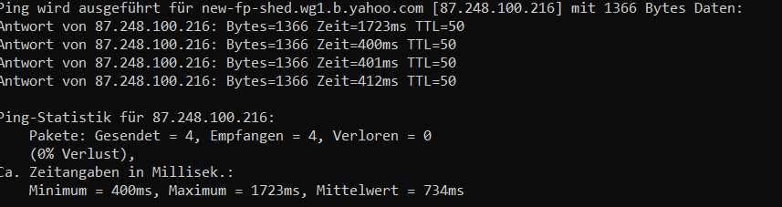
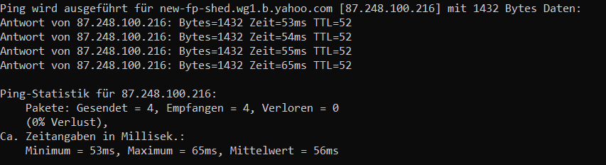
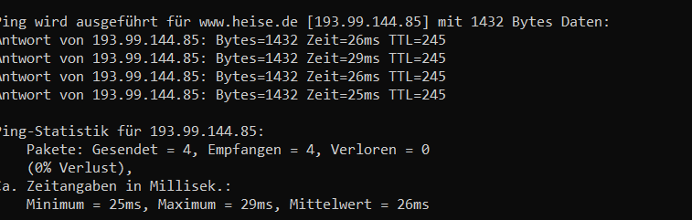
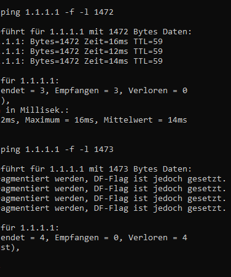
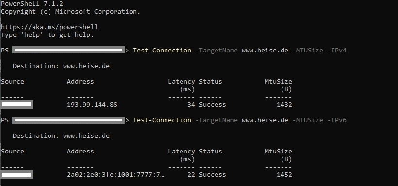
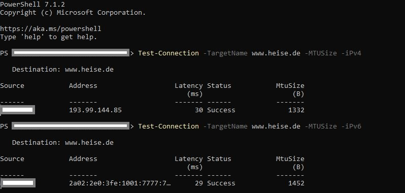
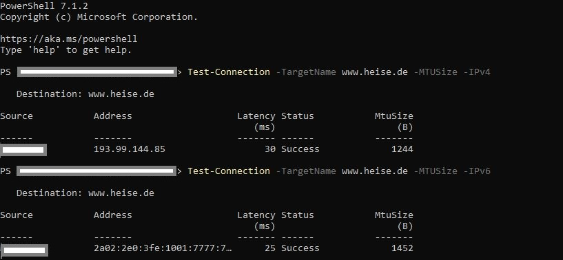
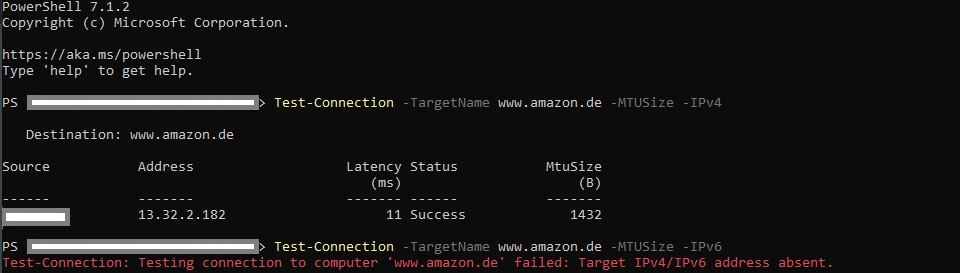

{kind=link}
Die Sache is nur die, wenn dort steht 100Gbit/s heißt das noch lange nicht, dass du das auch erreichen kannst
 ...
...
Hast du mit der IT in deiner Fimra schon mal telefoniert? Was sagen die dazu?
Hallo,
ich habe festgestellt, dass meine Verbindung (gigakraft 250) im VPN extrem einbricht. Habe schon diverse vergleichende Speedtests sowohl im Firmen- als auch in meinem Privat-VPN gemacht und konstant einen Verlust zw. 60% und 80% gemessen. Gibts hier irgendwas, was man machen kann? Danke für die Hilfe.
LG Armin
Hello,
ist das nur bei deinem Internet so? Oder auch, wenn du es über einen anderen Betreiber probierst? Oder via Handyhotspot z.b.?
Hallo Mario,
anbei ein aktueller Test mit Magenta und Handyhotspot. Verlust ist bei beiden Verbindungen hoch, aber beim Kabelinternet ist der Faktor 10:1.
LG
Bearbeitet von kasparlovWar das früher anders? Also war es früher schneller?
vor 1 Minute schrieb MarioM:War das früher anders? Also war es früher schneller?
Nein, glaube nicht. Ich dachte immer dieser Verlust im VPN ist normal. Vor Kurzem haben wir dann zufällig im Kollegenkreis Speedtests in unseren home offices verglichen und außer bei mir war der Verlust bei allen vernachlässigbar (<10%).
Sehr eigenartig - Ich nehme an die Settings sind gleich wie bei dir? Also bei deinen Kollegen.
Eventuell solltest du mal bei der Hotline anrufen? Vielleicht haben die eine Idee?
Die Frage ist doch...
Läuft der reine HTTP Traffic bei dir über den VPN Knoten, dann sollte die Auslastung des firmenspezifischen VPN Knotens angesehen werden.
Oder wird der HTTP Traffic explizit ausgenommen, dann darf eine Einschränkung der Speed nicht sein.
Das solltest du mit deiner Firma klären, wie die Konfig da aussieht.
Der Standard ist durchaus oft so, dass auch HTTP über den VPN läuft und dann kann Magenta nichts dafür.
"... und dann kann Magenta nichts dafür" ? Außer natürlich, die Firma ist Magenta Kunde ? Soweit ich das verstanden habe, obwohl ich auch nur ein Benutzer bin, sind die 30 Mbit/s der Datendurchsatz der Firmen-Firewall, weil bei mir der Upload bei einem Speedtest auf z.B. speedtest.net immer mit 0Mbit/s angezeigt wird. Als die VPN Verbindung anfangs nicht ganz flüssig lief, änderte sich nach einiger Zeit die Übertragungsrate der virtuellen VPN Netzwerkkarte von 10 Gbit/s auf 100 Gbit/s (richtig gelesen), was vermutlich ein Produkt-Upgrade war.
Bearbeitet von nämo
Die Sache is nur die, wenn dort steht 100Gbit/s heißt das noch lange nicht, dass du das auch erreichen kannst
 ...
...
Hast du mit der IT in deiner Fimra schon mal telefoniert? Was sagen die dazu?
Und, bei mir in der Firma werden intern 100GBit/s Links verwendet. Wobei ich mich da noch nicht getraut habe einen Speedtest zu machen, nicht das ich das Internet kaputt mache

Die Virtuelle Netzwerkkarte ändern bringt nur bedingt etwas. In meinem Hypervisor ist eine 1GBit/s physische Nic verbaut, virtuelle sind aber primär 10 GBit/s. Bedeutet aber nicht, dass ich mit 10 GBit/s ins Internet komme. Das erste Problem die physische NIC, dann die Internetleitung(en).
Am 25.2.2021 um 09:05 schrieb kasparlov:
Nein, glaube nicht. Ich dachte immer dieser Verlust im VPN ist normal. Vor Kurzem haben wir dann zufällig im Kollegenkreis Speedtests in unseren home offices verglichen und außer bei mir war der Verlust bei allen vernachlässigbar (<10%).
Um welche Bandbreiten ging es effektiv? Wenn die Kollegen nur 10 MBit/s Leitungen haben, ist es eine andere Baustelle
Welche ISPs sind involviert? (Firma, Kollegen)
ich habe genau das gleich Problem, sobald ich mich mit dem Firmen-VPN verbinde geht so gut wie gar nichts mehr, jedoch dürfte sich das nur auf die neueren ConnectBoxen beschränken, mit dem mobilen Magenta Würfel funktioniert alles einwandfrei. Auch im Kollegenkreis gibt es die gleichen Probleme bei Verbindung mit den neueren magenta connect boxen, dieses Problem tritt aber erst seit ca. 2 Wochen auf, vorher ging alles problemlos
Welche VPN Lösung ist im Einsatz?
vor 13 Stunden schrieb IT-Freak:Welche VPN Lösung ist im Einsatz?
sorry was meinst du damit für nicht Experten??
vor 11 Minuten schrieb Hawei:sorry was meinst du damit für nicht Experten??
Welches Programm man fürs VPN aufmacht, wie das VPN Protokoll heißt, welches verwendet wird, etc.
z.B. cisco any connect, GRE, IPSec, OpenVPN, Wireguard.........
Edit: Diese Frage müsste die IT Abteilung problemlos beantworten können
Bearbeitet von IT-Freaki
vor 8 Stunden schrieb IT-Freak:Welches Programm man fürs VPN aufmacht, wie das VPN Protokoll heißt, welches verwendet wird, etc.
z.B. cisco any connect, GRE, IPSec, OpenVPN, Wireguard.........
Edit: Diese Frage müsste die IT Abteilung problemlos beantworten können
IPSec
Teste bitte einmal die MTU.
Bis Schritt 4 und dann das Ergebnis hier Posten, was das höchste ist, was funktioniert hat und das kleinste ab dem es nicht funktioniert hat.
Am besten mit Screenshot



War das mit VPN oder ohne?
Egal wie, könntest du das bitte einmal anders herum auch wiederholen.
mit VPN
du meinst den Wert erhöhen?
Genau den selben Test nochmals, ohne VPN. Da müsste dann ein höherer Wert herauskommen.
ohne VPN

Aua
Könntest du bitte den Test mit six.heise.de wiederholen, ohne VPN.
Es ist sehr löblich, daß man immer wieder von Neuem das sprichwörtliche kochende Wasser mit der MTU erfinden will. Jedoch, daß irgendwann alle Firmen-VPN-Server und alle VPN-Benutzer-PCs im HomeOffice richtig konfiguriert sein werden, ist eine Illusion. Zielführender wäre es schon seit Jahren, seit dem dieses VPN Problem mit der Connect Box bekannt ist, sich endlich genauer anzuschauen, wie das alte Ubee EVW3226 Modem mit seiner VPN-Option in den Einstellungen mit ESP-Paketen umgeht und daraus für eine neue Firmware für das Modem zu lernen, sofern das lizenzrechtlich möglich ist.

Ich fürchte, das war der falsche Screenshot.
Hallo,
ich habe festgestellt, dass meine Verbindung (gigakraft 250) im VPN extrem einbricht. Habe schon diverse vergleichende Speedtests sowohl im Firmen- als auch in meinem Privat-VPN gemacht und konstant einen Verlust zw. 60% und 80% gemessen. Gibts hier irgendwas, was man machen kann? Danke für die Hilfe.
LG Armin

Bitte six.heise.de
Der Hintergrund dabei ist, dass es sich dabei um einen IPv6 only Dienst handelt.
Je nach dem, wie Magenta IPv4 realisiert, gibt es da einen Unterschied
Ok, dann sollte es sich ein Magenta Mitarbeiter ansehen.
Das Problem sieht irgendwie spannend aus. Es macht den Eindruck, als würde der ganze Traffic durch einen Tunnel im Magenta Netz gejagt und dadurch kann nicht die volle MTU genutzt werden.
Jetzt wäre es noch interessant, wenn jemand anderer mit dem selben Problem die selben Tests wieder hohlt.
Um welche Region geht es?
Wien West
es ist zum Verzweifeln, bei Magenta hat man mir nur erklärt dass ich eventuell mein Passwort falsch eingegeben habe und die Box falsch angeschlossen habe, es kann auch IPv6/4 liegen und es wurde weitergeleitet

So sollte das ganze aussehen, wenn das Netz keine Einschränkung macht.
(IPv4 direkt ohne Hilfstechnologien, untunneled, "analoge" Docsis Architektur, über das Netz eines anderen Kabelanbieters)
Jetzt wäre es gut, wenn es sich ein Magenta Experte ansehen würde, warum da nur so eine kleine MTU bei den betroffenen Kunden möglich ist.
IPsec bevorzugt die MTU 1500. Die hat man, wenn Ping mit --l 1472 funktioniert.
danke für deine Unterstützung und Mühe

magenta dürfte jetzt etwas umgestellt haben und nun funktioniert das VPN, Upload ist zwar nicht berauschend ... aber ich kann wieder nomal arbeiten
Hat sich da bei dem Thema Ping ohne VPN etwas verbessert, sprich höherer Paketsize möglich?
vor 8 Stunden schrieb IT-Freak:Hat sich da bei dem Thema Ping ohne VPN etwas verbessert, sprich höherer Paketsize möglich?
ja
Am 5.3.2021 um 08:33 schrieb IT-Freak:Jetzt wäre es noch interessant, wenn jemand anderer mit dem selben Problem die selben Tests wieder hohlt.
Zwar habe ich nicht das Problem, bei mir funktioniert die VPN einwandfrei. Die Tests mache ich lieber nur mit dem privaten PC, um den Herrn von der IT nicht von der ungemütlichen Seite kennenzulernen. Bei mir in Wien 10 gleich beim Arsenal mit Magenta Festnetz Internet sieht es folgendermaßen aus:
wenn die MTU am PC und am Modem 1500 ist:

wenn die MTU am PC 1500 und am Modem 1400 ist:

und wenn die MTU am PC ipv4 1272, ipv6 1328 und am Modem 1400 ist:

Nachdem ich mich nun ein bisschen eingelesen habe in das Thema, scheint es mir als absolutem Laien, daß der DNS64 Server sehr lange braucht, um festzustellen, daß es keine IPv6 Adresse einer Domain gibt. Dabei ist mir aufgefallen, daß bei z.B. www.amazon.de die Antwort sofort da war:

Das Fazit wäre somit, sich einen eigenen DNS64 Server in einer Amazon Cloud zu schreiben, um nicht auf die Antwort des öffentlichen DNS64 Servers warten zu müssen.
Bearbeitet von nämovor 12 Stunden schrieb Hawei:ja
Sehr gut. Welche werte sind da nun möglich?
Wie muss der Gedankenweg sein, um auf dns64 zu kommen?
Also der dns64 Server hat ziemlich sicher bis jetzt noch nicht geantwortet.
DNS64 braucht man bei NAT64, wo mir aktuell noch kein ISP einfällt, der dies in Österreich verwendet.
Wobei die Tendenz eher weg von dns64 geht und eher nur noch in Richtung 464xlat.
Es geht auch nicht darum an der MTU irgendwas zu verstellen, sondern herauszufinden welche MTU im Magenta Coax Netz funktioniert. Wenn das Netz keine passende MTU unterstützt, kann man sich ja beschweren gehen.
By the way, falls es nicht klar sein sollte, ich bin kein Magenta Mitarbeiter. Das einzige was ich machen kann, ist Tipps geben. Entweder zur Fehlersuche, teilweise sogar zur Behebung, oder nur Informationen sammeln, die vielleicht bei der Behebung helfen können
vor 3 Stunden schrieb IT-Freak:Sehr gut. Welche werte sind da nun möglich?
1472
vor 3 Stunden schrieb Hawei:1472
Perfekt, so soll es sein
{kind=link}